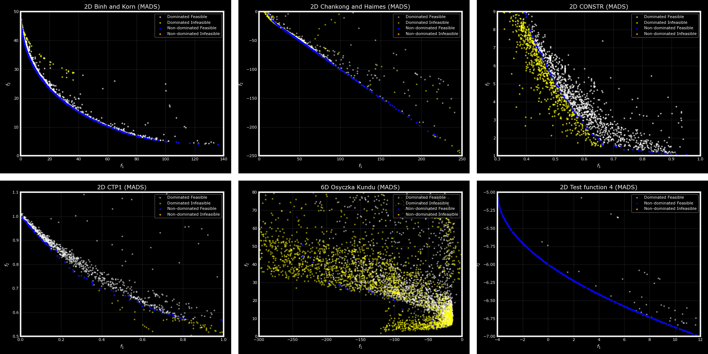
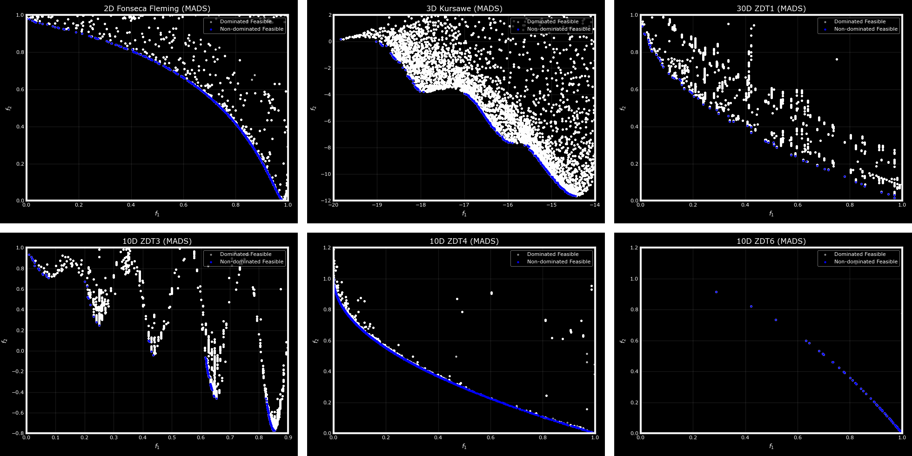

OMADS: Optimization using Mesh Adaptive Direct Search#
Overview#
OMADS is a Python implementation of the Mesh Adaptive Direct Search (MADS) algorithm [Audet and Dennis, 2006] for blackbox optimization. It addresses problems of the form
where the objective \(f\) (scalar- or vector-valued) and the constraints \(c_j\) are available only through evaluation: no derivatives are provided, and the functions may be non-smooth, noisy, expensive, or undefined at some points. MADS is a direct search method with a convergence analysis based on the Clarke nonsmooth calculus. OMADS follows many of the algorithmic choices of NOMAD 4 [Audet et al., 2022] and adds a density-guided sampling search.
Main features#
Three solvers sharing one input format: the complete algorithm (
mads), the poll step alone (poll), and the search step alone (search).Orthogonal poll directions derived from Householder matrices, with \(2n\) (
ORTHO_2N) or \(n+1\) (ORTHO_N+1) directions [Audet et al., 2014].The classical orthogonal mesh and the anisotropic granular mesh [Audet et al., 2019].
Constraint handling by the progressive barrier and the extreme barrier [Audet and Dennis, 2009], with primary and secondary frame centres.
A speculative step and a constraint-aware quadratic model search at every iteration [Conn and Le Digabel, 2013].
An adaptive sampling search based on a bi-population tree-structured Parzen estimator (BiTPE), with Halton, Latin hypercube, simulated annealing and particle swarm alternatives.
Multi-objective (Pareto) studies assessed by the hypervolume indicator.
Evaluation cache, opportunistic strategy, parallel evaluation, CSV logs and reproducible random seeds.
Minimal example#
import numpy as np
from OMADS import mads
def rosenbrock(x):
x = np.asarray(x)
f = np.sum(100.0 * (x[1:] - x[:-1] ** 2) ** 2 + (1 - x[:-1]) ** 2)
return [f, [0]] # [objective, list of constraints c(x) <= 0]
data = {
"evaluator": {"blackbox": rosenbrock},
"param": {"name": "rosen", "baseline": [-2.0, -2.0], "lb": [-5, -5],
"ub": [10, 10], "scaling": [15, 15], "post_dir": "./post"},
"options": {"seed": 0, "budget": 1000, "tol": 1e-9, "rich_direction": True,
"store_cache": True, "check_cache": True},
"search": {"type": "sampling", "s_method": "ACTIVE", "ns": 10},
}
out, *_ = mads.main(data)
print(out["xmin"], out["fmin"]) # [1.0, 1.0] [0.0] (223 evaluations)
Organization of this documentation#
- Getting started
Installation, a first run, and the structure of the input.
- Background
Definitions, convergence-related concepts and the algorithms implemented in OMADS, given as pseudocode.
- Benchmarking
The regression suite, reference values against NOMAD 4, and the COCO
bbob-constrainedexperiment.- Tutorials
Worked examples: test functions, constrained and multi-objective problems, external simulators, parallel evaluation and post-processing.
- Configuration reference and Outputs
Complete description of the input keys, their defaults, and the files produced by a run.
- API reference
Reference of the solver entry points and of the classes behind them.
Multi-objective results#
The figures below show Pareto fronts obtained by OMADS on constrained (top) and unconstrained (bottom) bi-objective test problems from the literature.




Citation#
If OMADS contributes to published work, please cite it as follows.
@software{OMADS_AB,
author = {Bayoumy, Ahmed H.},
title = {OMADS: Optimization using Mesh Adaptive Direct Search},
year = {2022},
publisher = {GitHub},
version = {2610},
doi = {10.5281/zenodo.7212701},
url = {https://github.com/Ahmed-Bayoumy/OMADS}
}
License#
© Ahmed H. Bayoumy 2022–2026. OMADS is free software distributed under the GNU General Public License, version 3 or later; see the LICENSE file.